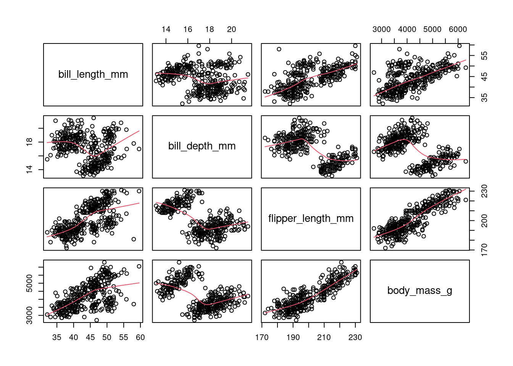
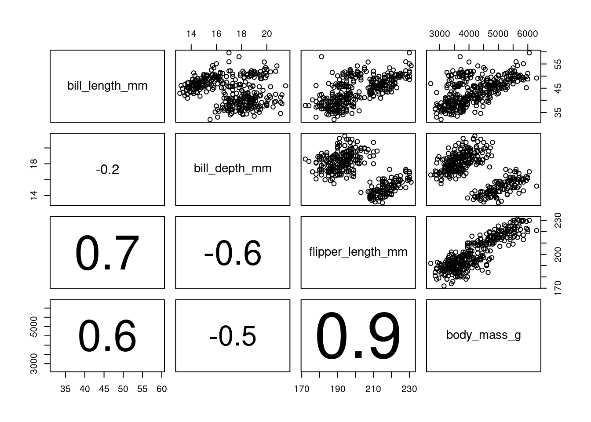

boxplot(penguins$body_mass_g, xlab="Masse (g)")Exploration des données
La phase initiale de l’analyse des données implique une exploration graphique de l’ensemble des données en répondant aux questions suivantes :
- Quelle est la tendance centrale des données ? Comment les données sont-elles distribuées ? La distribution est-elle symétrique, asymétrique ou bimodale ?
- Y a-t-il des valeurs aberrantes dans l’ensemble des données ?
- Les variables suivent-elles une distribution normale ?
- Existe-t-il des relations entre les variables ? Ces relations sont-elles linéaires ? Quelles sont les analyses ultérieures à effectuer ?
- Une transformation des données est-elle nécessaire ?
- L’effort d’échantillonnage a-t-il été approximativement égal pour chaque observation ou variable ?
En explorant systématiquement ces questions, nous pouvons acquérir une compréhension globale des caractéristiques de l’ensemble de données et guider l’orientation des analyses ultérieures.
Outils graphiques
Boîte à moustache
Un diagramme en boîte, ou boîte à moustaches, permet de visualiser la moyenne et la dispersion d’une variable univariée. Normalement, le point central d’un diagramme en boîte est la médiane, mais il peut également s’agir de la moyenne. Les quartiles 25% et 75% (Q25 et Q75) définissent les charnières (extrémités des boîtes), et la différence entre les charnières est appelée l’écart. Des lignes (ou moustaches) sont tracées à partir de chaque charnière jusqu’à 1,5 fois l’écart ou jusqu’à la valeur la plus extrême de l’écart, la plus petite étant retenue. Tous les points situés en dehors de ces valeurs sont normalement identifiés comme des valeurs aberrantes Figure 1.
Note
La syntaxe générale pour créer la boîte à moustache d’une variable en utilisant base R est: boxplot(variable).
L’aide complète de la fonction boxplot() est obtenue par la commande ?boxplot().
Etudions la variable body_mass_g en représentant sa boîte à moustache.
On remarque qu’aucune valeur aberrante n’apparait de façon visible. De plus on observe que la médiane du poids des manchots se situent autour de 4000 g (on peut facilement confirmer cela en calculant la médiane median(penguins$body_mass_g)).
On peut alors être amenée à continuer l’exploration en étudiant le poids, cette fois-ci en étudiant la variable par espèce de manchot.
boxplot(body_mass_g ~ species, data=penguins, ylab="Masse (g)", xlab=NULL)
Les boîte à moustaches representées nous permettent de nous rendre compte que l’espèce Gentoo a sensiblement une masse plus élevée que les deux autres. On pourra confirmer si cette différence est significative avec une analyse de variance. De plus, on observe la présence de quelques valeurs aberrantes chez l’espèce Chinstrap.
Diagramme de points de Cleveland
Les diagrammes de points de Cleveland sont utiles pour identifier les valeurs aberrantes et l’homogénéité.
L’homogénéité signifie que la variance des données ne change pas le long des gradients. La violation de cette condition est appelée hétérogénéité et l’homogénéité est une hypothèse cruciale pour de nombreuses méthodes statistiques.
La valeur est présentée sur l’axe horizontal et l’ordre des points (tel qu’il est organisé par le programme) est présenté sur l’axe vertical.
Note
La syntaxe pour générer un nuage de points avec base R est dotchart(variable). L’aide est disponible avec la commande ?dotchart().
Representons le nuage de point de Cleveland avec pour but d’identifier une possible violation de l’homogénéité ou la présence de valeurs aberrantes. Le diagrammes à points est réalisé en utilisant différents symboles conditionnels à une variable explicative nominale qui est ici l’espèce.
dotchart(penguins$body_mass_g, main="Masse (g)", pch=as.numeric(penguins$species))Tout point isolé à droite ou à gauche indique des valeurs aberrantes, mais dans cet jeu de données, en considérant l’ensemble du graphique aucun point n’est considéré comme aberrant, ce qui confirme notre observation de la boîte à moustache. Cependant comme observé plus haut, en prenant les points par groupe (chaque symbole représentant une espèce différente) on observe bien un groupe présentant des valeurs aberrantes.
Histogramme
Un histogramme montre le centre et la distribution des données et donne une indication de la normalité. Toutefois, l’application d’une transformation des données pour les faire correspondre à une distribution normale nécessite des précautions.
# Subdivision du panel graphique
layout(matrix(c(1, 2, 1, 3), nrow = 2, byrow = TRUE))
# Histrogramme de la masse pour l'ensemble des manchots
hist(penguins$body_mass_g, main="Masse (g)", xlab=NULL)
# Histrogramme de la masse pour les males
hist(penguins$body_mass_g[penguins$sex=="male"], main="Males", xlab=NULL)
# Histrogramme de la masse pour les femelles
hist(penguins$body_mass_g[penguins$sex=="female"], main="Females", xlab=NULL)
La forme de l’histogramme montre une certaine asymétrie et l’on pourrait être tenté d’appliquer une transformation. Cependant, un histogramme conditionnel donne une image assez différente. Dans un histogramme conditionnel, les données sont divisées en fonction d’une variable nominale et les histogrammes des sous-ensembles sont tracés côte-à-côte. A ce moment on obtient une figure tout autre montrant une bimodalité aussi bien chez les males que chez les femelles manchots. On a une différence claire du centre de la distribution et la pic initial de données observé sur le premier histogramme est grandement du aux femelles. Il faudrait donc explorer les effets du sexe sur le poids des manchots ainsi que les interactions avant d’envisager une transformation des données.
QQ-plots
Un graphique Quantile-Quantile (QQ-plots) est un outil graphique utilisé pour déterminer si les données suivent une distribution particulière. Le graphique QQ pour une distribution normale compare la distribution d’une variable donnée à la distribution gaussienne. Si les points obtenus se situent approximativement sur une ligne droite, on considère que la distribution des données est la même que celle d’une variable normalement distribuée.
Le \(p\)-ème quantile \(q\) d’une variable aléatoire \(y\) est donnée par \(F(q) = P(y \leq q) = p\). Si l’on souhaire savoir quelle valeur de \(q\) appartient à \(p\), on inverse la formule précédente pour obtenir \(q = F^{-1}(p)\). Supposons que nous avons cinq observations \(Y_i\) avec les valeurs 1, 2, 3, 4, 5. Par définition, le premier chiffre est le 0% percentile, le milieu est le 50% percentile et 5 est le 100% percentile. La différence entre un quantile et un percentile est un seulement le facteur 100. Les QQ-plots sont soit basés sur les percentiles ou typiquement sur les points quantiles de l’échantillon définis par \((i-0.5)/n\) où \(i\) varie de 1 à 5 et \(n=5\) dans notre example. Ainsi pour notre exemple, les points de quantiles de l’échantillon sont 0,1, 0,3, 0,5, 0,7 et 0,9. Ce sont les valeurs de \(p\) pour l’échantillon. Dans la séconde étape, ces quantiles de l’échantillon sont comparés à une distribution normale. Celà signifie que la fonction de densité \(P(y\leq q)\) est désormais une fonction de densité normale et \(F()\) est désormais la fonction de répartition de la loi normale.
Le QQ-plot est donc un graphique des valeurs de \(Y_i\) de l’échantillon comparés aux \(q_i\). On peut ajouter à ce graphique dans R, une ligne qui connecte les 25e et le 75e quartiles.
Nous appliquons dans le même temps une transformation des données pour visualiser laquelle produit le meilleur ajustement.
Il est très souvent utilse de combiner les QQ-plots avec des transformations de puissance, qui est donnée par \[ \frac{Y^p - 1}{p}, \forall p \neq 0; log(Y) , p = 0\]
Veuillez noter que le \(p\) utilisé ici n’est pas le \(p\) utilisé pour décrire les quantiles. Il est aussi utile de comparer plusieurs QQ-plots pour différentes valeurs de \(p\).
# Transformation racine carrée
bmsq <- sqrt(penguins$body_mass_g)
# Transformation racine quatrième
bmfq <- penguins$body_mass_g^(0.25)
# Transformation logarithmique
bmlog <- log(penguins$body_mass_g)Dans le graphique ci-dessous, aucune transormation semble prendre le dessus sur l’autre.
layout(matrix(c(1, 2, 3, 4), nrow = 2, byrow = TRUE))
qqnorm(penguins$body_mass_g, main="Aucune transformation (p=0)")
qqline(penguins$body_mass_g)
qqnorm(bmsq, main="Racine carré (p=0.5)")
qqline(bmsq)
qqnorm(bmfq, main="Racine quatrième (p=0.25)")
qqline(bmfq)
qqnorm(bmlog, main="Logarithme (p=1)")
qqline(bmlog)Nuage de points
Jusqu’à présent, l’accent a été mis sur la détection des valeurs aberrantes, la vérification de la normalité et l’exploration d’ensembles de données associés à des variables explicatives nominales uniques. Les techniques suivantes s’intéressent aux relations entre plusieurs variables. Un nuage de points est un outil permettant de trouver une relation entre deux variables. Il représente une variable sur l’axe horizontal et une seconde variable sur l’axe vertical. Pour aider à visualiser la relation entre les variables, une ligne droite ou une courbe de lissage est souvent ajoutée au graphique.
plot(penguins$flipper_length_mm, penguins$body_mass_g, xlab="Taille des nageoires", ylab="Masse (g)")
m1 <- lm(body_mass_g ~ flipper_length_mm, data=penguins)
abline(m1)
Pairplots
Si vous avez plus de deux variables, vous pouvez produire une série de nuage de points : un pour chaque paire de variables. Cependant, le nombre de diagrammes augmente rapidement si vous avez plus de trois variables à explorer. Une meilleure approche, jusqu’à environ 10 variables explicatives, est le diagramme de paires encore appelée matrice de nuage de points. Ces diagrammes présentent plusieurs nuage de points par paire dans un seul graphique et peuvent être utilisés pour détecter les relations entre les variables et pour détecter la colinéarité.
# penguins[3:6] sélectionne les variables bill_length_mm
# bill_depth_mm, flipper_length_mm, body_mass_g
pairs(penguins[,3:6])
Coplot
Un coplot est un nuage de points conditionnel montrant la relation entre y et x, pour différentes valeurs d’une troisième variable z, voire d’une quatrième variable w. Les variables conditionnelles peuvent être nominales ou continues.
coplot(body_mass_g ~ flipper_length_mm | species, data = penguins)
Missing rows: 4, 272 Diagrammes de conception et d’interaction
Les diagrammes de conception et d’interaction sont un autre outil précieux pour explorer les ensembles de données avec des variables nominales et sont particulièrement utiles à utiliser avant d’appliquer la régression, la GLM, la modélisation mixte ou l’ANOVA. Ils permettent de visualiser (i) les différences entre les valeurs moyennes de la variable réponse pour différents niveaux de variables nominales et (ii) les interactions entre les variables explicatives.
plot.design(body_mass_g ~ species + sex + island, data = penguins)
interaction.plot(penguins$species, penguins$sex, penguins$body_mass_g)
interaction.plot(penguins$sex, penguins$island, penguins$body_mass_g)Valeurs aberrantes, transformations et standardisation
Valeurs aberrantes
Une valeur aberrante est un point de données qui, en raison de sa valeur extrême par rapport au reste de l’ensemble de données, peut influencer incorrectement une analyse. La première question qui se pose est donc la suivante : « Comment identifier une valeur aberrante ? Une approche simple pourrait consister à quantifier tout ce qui est aberrant au-delà d’une certaine distance par rapport au centre des données.
Transformation
Il existe de nombreuses raisons de transformer les données, mais c’est généralement parce que les données présentent des valeurs extrêmes aberrantes et des distributions non normales. La transformation des données (sur les variables de réponse) sera également nécessaire lorsque vous prévoyez d’utiliser l’analyse discriminante et qu’il existe des preuves évidentes (par exemple, en utilisant un diagramme en pointillés de Cleveland) de l’hétérogénéité.
De plus, le choix de la transformation est influencée par le choix de l’analyse de suivi. Pour certaines techniques, telles que les arbres de classification ou de régression, la transformation des variables explicatives ne change rien aux résultats. Cependant, la plupart des techniques peuvent nécessiter une certaine transformation des données brutes avant l’analyse.
Standardisation
Si les variables comparées proviennent d’échelles très différentes, comme la comparaison des taux de croissance de petites espèces de poissons avec ceux de grandes espèces de poissons, la standardisation (conversion de toutes les variables à la même échelle) peut être une option. Toutefois, cela dépend de la technique statistique utilisée.